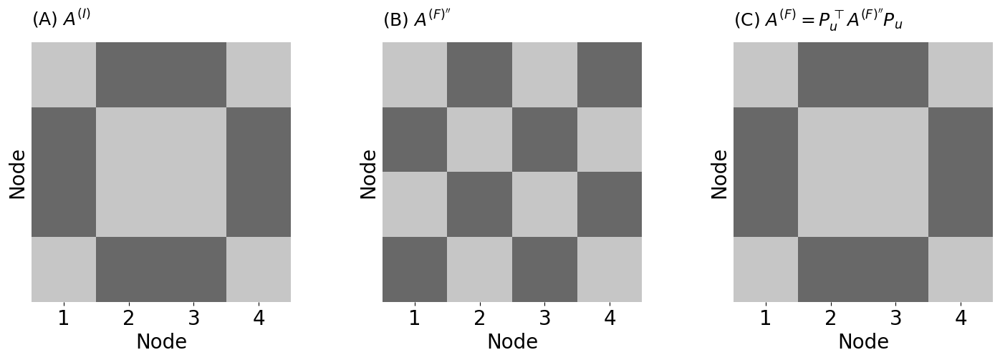
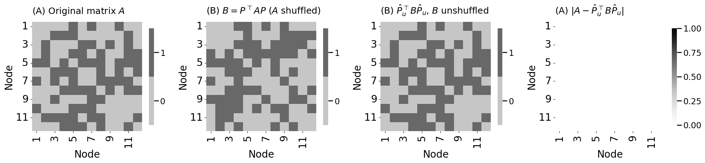
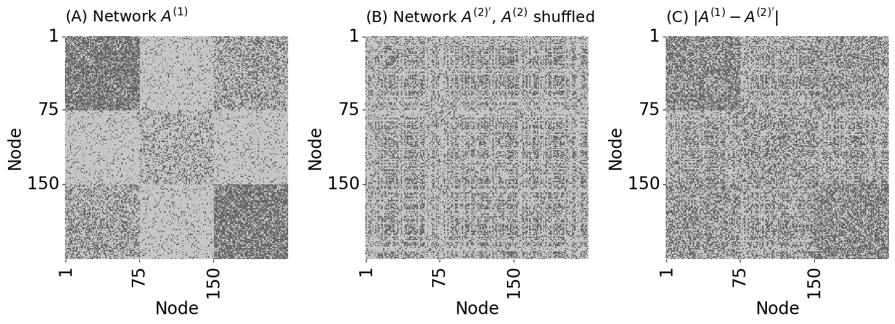
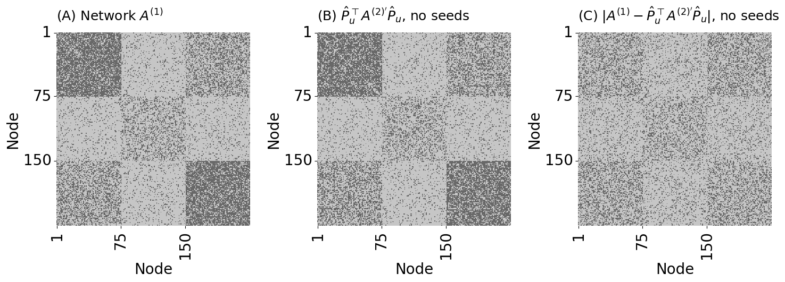
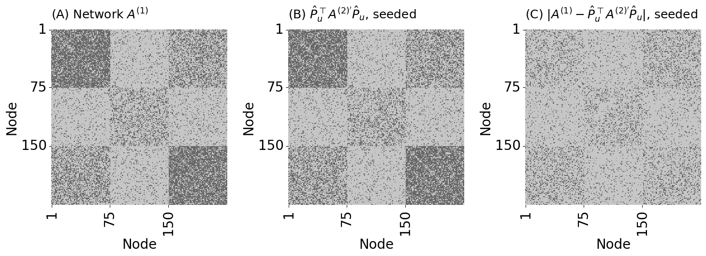
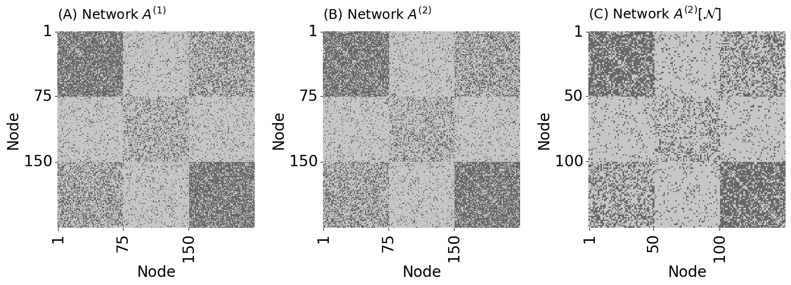
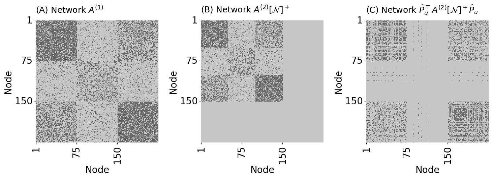
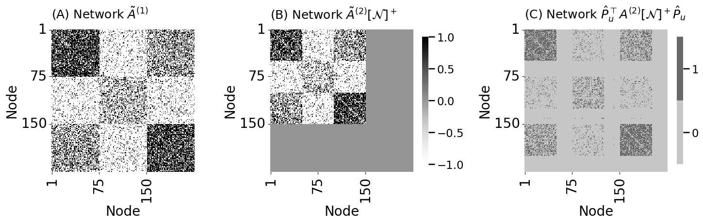

mode = "svg"
import matplotlib
font = {'family' : 'Dejavu Sans',
'weight' : 'normal',
'size' : 20}
matplotlib.rc('font', **font)
import matplotlib
from matplotlib import pyplot as plt
import numpy as np
A = np.array([
[1,1,1,1],
[2,2,2,2],
[3,3,3,3],
[4,4,4,4]
])
P = np.array([
[0,1,0,0],
[1,0,0,0],
[0,0,1,0],
[0,0,0,1]
])
row_reordering = P.T @ A
B = np.array([
[1,2,3,4],
[1,2,3,4],
[1,2,3,4],
[1,2,3,4]
])
column_reordering = B @ P
C = np.array([
[1,1,1,1],
[1,0,0,0],
[1,0,0,0],
[1,0,0,0]
])
row_reordering_C = P.T @ C
row_column_reordering = row_reordering_C @ P
from graphbook_code import heatmap
import os
fig, axs = plt.subplots(3, 3, figsize=(14, 14))
# Row A
heatmap(A.astype(int), xtitle="Column", xticks=[i + 0.5 for i in range(4)], xticklabels=[i + 1 for i in range(4)],
ytitle="Row", yticks=[i + 0.5 for i in range(4)], yticklabels=[i + 1 for i in range(4)],
title="(A.I) Original matrix $A$", ax=axs[0][0])
heatmap(P.astype(int), xtitle="Column", xticks=[i + 0.5 for i in range(4)], xticklabels=[i + 1 for i in range(4)],
ytitle="Row", yticks=[i + 0.5 for i in range(4)], yticklabels=[i + 1 for i in range(4)],
title="(A.II) Permutation matrix $P$", ax=axs[0][1])
heatmap(row_reordering.astype(int), xtitle="Column", xticks=[i + 0.5 for i in range(4)], xticklabels=[i + 1 for i in range(4)],
ytitle="Row", yticks=[i + 0.5 for i in range(4)], yticklabels=[i + 1 for i in range(4)],
title="(A.III) Row permutation $P^{\\top} A$", ax=axs[0][2])
# Row B
heatmap(B.astype(int), xtitle="Column", xticks=[i + 0.5 for i in range(4)], xticklabels=[i + 1 for i in range(4)],
ytitle="Row", yticks=[i + 0.5 for i in range(4)], yticklabels=[i + 1 for i in range(4)],
title="(B.I) Original matrix $B$", ax=axs[1][0])
heatmap(P.astype(int), xtitle="Column", xticks=[i + 0.5 for i in range(4)], xticklabels=[i + 1 for i in range(4)],
ytitle="Row", yticks=[i + 0.5 for i in range(4)], yticklabels=[i + 1 for i in range(4)],
title="(B.II) Permutation matrix $P$", ax=axs[1][1])
heatmap(column_reordering.astype(int), xtitle="Column", xticks=[i + 0.5 for i in range(4)], xticklabels=[i + 1 for i in range(4)],
ytitle="Row", yticks=[i + 0.5 for i in range(4)], yticklabels=[i + 1 for i in range(4)],
title="(B.III) Column permutation $BP$", ax=axs[1][2])
# Row C
heatmap(C.astype(int), xtitle="Column", xticks=[i + 0.5 for i in range(4)], xticklabels=[i + 1 for i in range(4)],
ytitle="Row", yticks=[i + 0.5 for i in range(4)], yticklabels=[i + 1 for i in range(4)],
title="(C.I) Original matrix $C$", ax=axs[2][0])
heatmap(row_reordering_C.astype(int), xtitle="Column", xticks=[i + 0.5 for i in range(4)], xticklabels=[i + 1 for i in range(4)],
ytitle="Row", yticks=[i + 0.5 for i in range(4)], yticklabels=[i + 1 for i in range(4)],
title="(C.II) Permute the rows $P^{\\top} C$", ax=axs[2][1])
heatmap(row_column_reordering.astype(int), xtitle="Column", xticks=[i + 0.5 for i in range(4)], xticklabels=[i + 1 for i in range(4)],
ytitle="Row", yticks=[i + 0.5 for i in range(4)], yticklabels=[i + 1 for i in range(4)],
title="(B.III) Permute rows/columns $P^{\\top} C P$", ax=axs[2][2])
fig.tight_layout()
fname = "gm_perm"
os.makedirs("Figures", exist_ok=True)
if mode != "png":
os.makedirs(f"Figures/{mode:s}", exist_ok=True)
fig.savefig(f"Figures/{mode:s}/{fname:s}.{mode:s}")
os.makedirs("Figures/png", exist_ok=True)
fig.savefig(f"Figures/png/{fname:s}.png")
/opt/hostedtoolcache/Python/3.12.5/x64/lib/python3.12/site-packages/tqdm/auto.py:21: TqdmWarning: IProgress not found. Please update jupyter and ipywidgets. See https://ipywidgets.readthedocs.io/en/stable/user_install.html
from .autonotebook import tqdm as notebook_tqdm
insta = np.array([
[0,1,1,0],
[1,0,0,1],
[1,0,0,1],
[0,1,1,0]
])
facebook_permuted = np.array([
[0,1,0,1],
[1,0,1,0],
[0,1,0,1],
[1,0,1,0]
])
# the permutation to unshuffle the facebook
# permuted adjacency matrix
Pu = np.array([
[1,0,0,0],
[0,1,0,0],
[0,0,0,1],
[0,0,1,0]
])
fb_unpermuted = Pu.T @ facebook_permuted @ Pu
fig, axs = plt.subplots(1, 3, figsize=(15, 5))
heatmap(insta.astype(int), title="(A) $A^{(I)}$", xtitle="Node", ytitle="Node",
xticks=[i + 0.5 for i in range(4)], xticklabels=[i + 1 for i in range(4)],
ax=axs[0], cbar=False)
heatmap(facebook_permuted.astype(int), title="(B) $A^{(F)''}$", xtitle="Node", ytitle="Node",
xticks=[i + 0.5 for i in range(4)], xticklabels=[i + 1 for i in range(4)],
ax=axs[1], cbar=False)
heatmap(fb_unpermuted.astype(int), title="(C) $A^{(F)} = P_u^{\\top} A^{(F)''} P_u$", xtitle="Node", ytitle="Node",
xticks=[i + 0.5 for i in range(4)], xticklabels=[i + 1 for i in range(4)],
ax=axs[2], cbar=False)
fig.tight_layout()
fname = "gm_fb_insta"
if mode != "png":
fig.savefig(f"Figures/{mode:s}/{fname:s}.{mode:s}")
fig.savefig(f"Figures/png/{fname:s}.png")

def make_random_permutation(n, random_seed=0):
"""
A function that generates a random permutation matric $P$ for n elements.
1. Generate indices from 0 to n-1
2. shuffle those indices
3. Place 1s in the matrix P at the positions defined by the shuffled indices.
"""
rng = np.random.default_rng(seed=random_seed)
starting_indices = np.arange(n)
destination_indices = rng.permutation(n)
P = np.zeros(shape=(n,n))
P[destination_indices, starting_indices] = 1
return P
from graspologic.simulations import er_np
n = 12
p = 0.5
np.random.seed(0)
A = er_np(n=n, p=p)
# make a random permutation matrix
P = make_random_permutation(n)
B = P.T @ A @ P
disagreements = np.linalg.norm(A - B)**2
from graspologic.match import graph_match
gmp = graph_match(A,B, n_init=10, rng=0)
def make_unshuffler(destination_indices):
"""
A function which creates a permutation matrix P from a given permutation of the nodes.
"""
n = len(destination_indices)
Pu = np.zeros((n, n))
starting_indices = np.arange(n)
Pu[destination_indices, starting_indices] = 1
return Pu
Pu = make_unshuffler(gmp.indices_B)
B_unshuffled = Pu.T @ B @ Pu
disagreements = np.linalg.norm(A - B_unshuffled)**2
print(f"Disagreements: {int(disagreements):d}")
# Disagreements: 0.0
Disagreements: 0
def match_ratio(P, Pu):
n = P.shape[0] # the number of nodes
return (np.diag(Pu @ P) == 1).sum()/n
print(f"match ratio: {match_ratio(P, Pu):.3f}")
# match ratio: 1.000
match ratio: 1.000
fig, axs = plt.subplots(1, 4, figsize=(20, 6))
heatmap(A.astype(int), title="(A) Original matrix $A$", xticks=[0.5 + 2*i for i in range(n//2)],
xticklabels=[2*i + 1 for i in range(n//2)], yticks=[0.5 + 2*i for i in range(n//2)],
yticklabels=[2*i + 1 for i in range(n//2)], xtitle="Node", ytitle="Node",
ax=axs[0], shrink=0.5)
heatmap(B.astype(int), title="(B) $B = P^\\top A P$ ($A$ shuffled)", xticks=[0.5 + 2*i for i in range(n//2)],
xticklabels=[2*i + 1 for i in range(n//2)], yticks=[0.5 + 2*i for i in range(n//2)],
yticklabels=[2*i + 1 for i in range(n//2)], xtitle="Node", ytitle="Node",
ax=axs[1], shrink=0.5)
heatmap(B_unshuffled.astype(int), title="(B) $\\hat P_u^\\top B \\hat P_u$, $B$ unshuffled", xticks=[0.5 + 2*i for i in range(n//2)],
xticklabels=[2*i + 1 for i in range(n//2)], yticks=[0.5 + 2*i for i in range(n//2)],
yticklabels=[2*i + 1 for i in range(n//2)], xtitle="Node", ytitle="Node",
ax=axs[2], shrink=0.5)
ax = heatmap(np.abs(A - B_unshuffled), title="(A) $|A - \\hat P_u^\\top B \\hat P_u|$", xticks=[0.5 + 2*i for i in range(n//2)],
xticklabels=[2*i + 1 for i in range(n//2)], yticks=[0.5 + 2*i for i in range(n//2)],
yticklabels=[2*i + 1 for i in range(n//2)], xtitle="Node", ytitle="Node",
ax=axs[3], shrink=0.5, vmin=0, vmax=1)
fig.tight_layout()
fname = "gm_simp_ex"
if mode != "png":
fig.savefig(f"Figures/{mode:s}/{fname:s}.{mode:s}")
fig.savefig(f"Figures/png/{fname:s}.png")

from graspologic.simulations import sbm_corr
n_per_block = 75
n_blocks = 3
block_members = np.repeat(n_per_block, repeats=n_blocks)
n_nodes = block_members.sum()
rho = 0.5
block_probs = np.array(
[[0.7, 0.1, 0.4],
[0.1, 0.3, 0.1],
[0.4, 0.1, 0.7]]
)
np.random.seed(0)
A1, A2 = sbm_corr(block_members, block_probs, rho)
disagreements = np.linalg.norm(A1 - A2)**2
print(f"Disagreements (Unshuffled): {int(disagreements):d}")
# Disagreements (Unshuffled): 8041
Disagreements (Unshuffled): 8041
P = make_random_permutation(n_nodes)
A2_shuffle = P.T @ A2 @ P
disagreements_shuffled = np.linalg.norm(A1 - A2_shuffle)**2
print(f"Disagreements (Shuffled): {int(disagreements_shuffled):d}")
# Disagreements (Shuffled): 22201
Disagreements (Shuffled): 22201
fig, axs = plt.subplots(1, 3, figsize=(15, 6))
heatmap(A1.astype(int), title="(A) Network $A^{(1)}$", cbar=False, ax=axs[0],
xticks=[0.5, 74.5, 149.5], xticklabels=[1, 75, 150],
yticks=[0.5, 74.5, 149.5], yticklabels=[1, 75, 150],
xtitle="Node", ytitle="Node")
heatmap(A2_shuffle.astype(int), title="(B) Network $A^{(2)'}$, $A^{(2)}$ shuffled",
cbar=False, ax=axs[1], xticks=[0.5, 74.5, 149.5], xticklabels=[1, 75, 150],
yticks=[0.5, 74.5, 149.5], yticklabels=[1, 75, 150], xtitle="Node", ytitle="Node")
heatmap(np.abs(A1 - A2_shuffle).astype(int), title="(C) $|A^{(1)} - A^{(2)'}|$",
cbar=False, ax=axs[2], xticks=[0.5, 74.5, 149.5], xticklabels=[1, 75, 150],
yticks=[0.5, 74.5, 149.5], yticklabels=[1, 75, 150],
xtitle="Node", ytitle="Node")
fig.tight_layout()
fname = "gm_seed_ex"
if mode != "png":
fig.savefig(f"Figures/{mode:s}/{fname:s}.{mode:s}")
fig.savefig(f"Figures/png/{fname:s}.png")

# fit with A and shuffled B
gm = graph_match(A1, A2_shuffle, rng=0)
# obtain unshuffled version of the shuffled B
P_unshuffle_noseed = make_unshuffler(gm.indices_B)
A2_unshuffle_noseed = P_unshuffle_noseed.T @ A2_shuffle @ P_unshuffle_noseed
# compute the match ratio
match_ratio_noseed = match_ratio(P, P_unshuffle_noseed)
print(f"Match Ratio, no seeds: {match_ratio_noseed:.3f}")
# Match Ratio, no seeds: 0.004
disagreements_noseed = np.linalg.norm(A1 - A2_unshuffle_noseed)**2
print(f"Disagreements, no seeds: {int(disagreements_noseed):d}")
# Disagreements, no seeds: 12810
Match Ratio, no seeds: 0.004
Disagreements, no seeds: 12866
fig, axs = plt.subplots(1, 3, figsize=(15, 6))
heatmap(A1.astype(int), title="(A) Network $A^{(1)}$", cbar=False, ax=axs[0],
xticks=[0.5, 74.5, 149.5], xticklabels=[1, 75, 150],
yticks=[0.5, 74.5, 149.5], yticklabels=[1, 75, 150],
xtitle="Node", ytitle="Node")
heatmap(A2_unshuffle_noseed.astype(int), title="(B) $\\hat P_u^\\top A^{(2)'} \\hat P_u$, no seeds",
cbar=False, ax=axs[1], xticks=[0.5, 74.5, 149.5], xticklabels=[1, 75, 150],
yticks=[0.5, 74.5, 149.5], yticklabels=[1, 75, 150],
xtitle="Node", ytitle="Node")
heatmap(np.abs(A1 - A2_unshuffle_noseed).astype(int), title="(C) $|A^{(1)} - \\hat P_u^\\top A^{(2)'} \\hat P_u|$, no seeds",
cbar=False, ax=axs[2], xticks=[0.5, 74.5, 149.5], xticklabels=[1, 75, 150],
yticks=[0.5, 74.5, 149.5], yticklabels=[1, 75, 150],
xtitle="Node", ytitle="Node")
fig.tight_layout()
fname = "gm_sgm_noseed"
if mode != "png":
fig.savefig(f"Figures/{mode:s}/{fname:s}.{mode:s}")
fig.savefig(f"Figures/png/{fname:s}.png")

def gen_seeds(P, n_seeds, random_seed=0):
"""
A function to generate n_seeds seeds for a pair of matrices A1 and P^TA2P
which are initially matched, but P has been applied to permute the nodes
of A2.
"""
rng = np.random.default_rng(seed=random_seed)
n = P.shape[0]
# obtain n_seeds random seeds from 1:n
seeds = rng.choice(n, size=n_seeds, replace=False)
# use the permutation matrix to find where each seed was permuted to
seeds_permuted = [np.where(P[i, :] == 1)[0] for i in seeds]
return (seeds, seeds_permuted)
nseeds = 10 # the number of seeds to use
# select ten nodes at random from A which will serve as seeds
# obtain seeds for nodes of A1 with nodes of A2 after shuffling
seedsA1, seedsA2_shuffled = gen_seeds(P, nseeds)
# run SGM with A1 and shuffled A2, but provide the seed nodes from A as ref_seeds
# and the corresponding position of these seed nodes after shuffling as permuted_seeds
sgm = graph_match(A1, A2_shuffle, partial_match=(seedsA1, seedsA2_shuffled), rng=0)
P_unshuffle_seeds = make_unshuffler(sgm.indices_B)
A2_unshuffle_seeds = P_unshuffle_seeds.T @ A2_shuffle @ P_unshuffle_seeds
match_ratio_seeds = match_ratio(P, P_unshuffle_seeds)
print(f"Match Ratio, seeds: {match_ratio_seeds:.3f}")
# Match Ratio with seeds: 1.000
disagreements_seeds = np.linalg.norm(A1 - A2_unshuffle_seeds)**2
print(f"Disagreements, seeds: {int(disagreements_seeds):d}")
# Disagreements, seeds: 8041
Match Ratio, seeds: 1.000
Disagreements, seeds: 8041
fig, axs = plt.subplots(1, 3, figsize=(15, 6))
heatmap(A1.astype(int), title="(A) Network $A^{(1)}$", cbar=False, ax=axs[0],
xticks=[0.5, 74.5, 149.5], xticklabels=[1, 75, 150],
yticks=[0.5, 74.5, 149.5], yticklabels=[1, 75, 150],
xtitle="Node", ytitle="Node")
heatmap(A2_unshuffle_seeds.astype(int), title="(B) $\\hat P_u^\\top A^{(2)'} \\hat P_u$, seeded",
cbar=False, ax=axs[1], xticks=[0.5, 74.5, 149.5], xticklabels=[1, 75, 150],
yticks=[0.5, 74.5, 149.5], yticklabels=[1, 75, 150],
xtitle="Node", ytitle="Node")
heatmap(np.abs(A1 - A2_unshuffle_seeds).astype(int), title="(C) $|A^{(1)} - \\hat P_u^\\top A^{(2)'} \\hat P_u|$, seeded",
cbar=False, ax=axs[2], xticks=[0.5, 74.5, 149.5], xticklabels=[1, 75, 150],
yticks=[0.5, 74.5, 149.5], yticklabels=[1, 75, 150],
xtitle="Node", ytitle="Node")
fig.tight_layout()
fname = "gm_sgm_seed"
if mode != "png":
fig.savefig(f"Figures/{mode:s}/{fname:s}.{mode:s}")
fig.savefig(f"Figures/png/{fname:s}.png")

from graspologic.utils import remove_vertices
nremove = 25
# nodes to remove from A2
n_nodes_A2_N = n_nodes - nremove*n_blocks
base_range = np.arange(n_per_block - nremove, n_per_block)
block_offsets = np.array([0, 75, 150])
# repeat a base range for each block and add block offsets
nodes_to_remove = np.repeat(base_range, len(block_offsets))
nodes_to_remove += np.tile(block_offsets, nremove)
N = np.setdiff1d(np.arange(n_nodes), nodes_to_remove)
# use the remove_vertices function to compute
# the subnetwork induced by the nodes nodes_to_retain
A2_N = remove_vertices(A2, nodes_to_remove)
fig, axs = plt.subplots(1, 3, figsize=(15, 6))
heatmap(A1.astype(int), title="(A) Network $A^{(1)}$", cbar=False, ax=axs[0],
xticks=[0.5, 74.5, 149.5], xticklabels=[1, 75, 150],
yticks=[0.5, 74.5, 149.5], yticklabels=[1, 75, 150], xtitle="Node", ytitle="Node")
heatmap(A2.astype(int), title="(B) Network $A^{(2)}$", cbar=False, ax=axs[1],
xticks=[0.5, 74.5, 149.5], xticklabels=[1, 75, 150],
yticks=[0.5, 74.5, 149.5], yticklabels=[1, 75, 150], xtitle="Node", ytitle="Node")
heatmap(A2_N.astype(int), title="(C) Network $A^{(2)}[\\mathcal{N}]$", cbar=False, ax=axs[2],
xticks=[0.5, 49.5, 99.5], xticklabels=[1, 50, 100],
yticks=[0.5, 49.5, 99.5], yticklabels=[1, 50, 100], xtitle="Node", ytitle="Node")
fig.tight_layout()
fname = "gm_sgm_nets"
if mode != "png":
fig.savefig(f"Figures/{mode:s}/{fname:s}.{mode:s}")
fig.savefig(f"Figures/png/{fname:s}.png")

A1_N = remove_vertices(A1, nodes_to_remove)
A2_N_padded = np.pad(
A2_N,
pad_width=[(0,nremove*n_blocks), (0, nremove*n_blocks)]
)
nseeds_padded = 10
np.random.seed(0)
# obtain which nodes of A2 will be the seeds to use, from the retained nodes in the network
seeds_A2_N = np.random.choice(n_nodes_A2_N, size=nseeds_padded, replace=False)
# obtain the nodes in A1
seeds_A1 = N[seeds_A2_N]
# run SGM with A1 and the padded network A2
# since we didn't shuffle A(2),r, we do not need
# to worry about permuting the seeds
sgm_naive = graph_match(A1, A2_N, partial_match=(seeds_A1, seeds_A2_N),
padding="naive", rng=0, n_init=5)
# unshuffle A2_N using indices_B
P_unshuffle = make_unshuffler(sgm_naive.indices_B)
A2_N_unshuffle_seeds_naive = P_unshuffle.T @ A2_N @ P_unshuffle
A2_naive_full = np.zeros(A1.shape)
A2_naive_full[np.ix_(sgm_naive.indices_A, sgm_naive.indices_A)] = A2_N_unshuffle_seeds_naive
fig, axs = plt.subplots(1, 3, figsize=(15, 6))
heatmap(A1.astype(int), title="(A) Network $A^{(1)}$", cbar=False, ax=axs[0],
xticks=[0.5, 74.5, 149.5], xticklabels=[1, 75, 150],
yticks=[0.5, 74.5, 149.5], yticklabels=[1, 75, 150], xtitle="Node", ytitle="Node")
heatmap(A2_N_padded.astype(int), title="(B) Network $A^{(2)}[\\mathcal{N}]^+$", cbar=False, ax=axs[1],
xticks=[0.5, 74.5, 149.5], xticklabels=[1, 75, 150],
yticks=[0.5, 74.5, 149.5], yticklabels=[1, 75, 150], xtitle="Node", ytitle="Node")
heatmap(A2_naive_full.astype(int), title="(C) Network $\\hat P_u^{\\top} A^{(2)}[\\mathcal{N}]^+\\hat P_u$", cbar=False, ax=axs[2],
xticks=[0.5, 74.5, 149.5], xticklabels=[1, 75, 150],
yticks=[0.5, 74.5, 149.5], yticklabels=[1, 75, 150], xtitle="Node", ytitle="Node")
fig.tight_layout()
fname = "gm_naive"
if mode != "png":
fig.savefig(f"Figures/{mode:s}/{fname:s}.{mode:s}")
fig.savefig(f"Figures/png/{fname:s}.png")

A1_induced = remove_vertices(A1, nodes_to_remove)
disagreements_naive = np.linalg.norm(A1_induced - A2_N_unshuffle_seeds_naive)**2
print(f"Disagreements, naive padding: {int(disagreements_naive):d}")
# Disagreements, naive padding: 9198
Disagreements, naive padding: 9434
A1tilde = 2 * A1 - np.ones(A1.shape[0])
A2tilde_N = 2*A2_N - np.ones(A2_N.shape[0])
A2tilde_N_padded = np.pad(A2tilde_N, [(0,nremove*n_blocks), (0, nremove*n_blocks)])
# run SGM with A1 and A2[N] with nodes removed
sgm_adopted = graph_match(A1, A2_N, partial_match=(seeds_A1, seeds_A2_N), padding="adopted", rng=0, n_init=5)
# unshuffle A2[N] using the permutation identified
P_unshuffle_ad = make_unshuffler(sgm_adopted.indices_B)
A2_N_unshuffle_seeds_adopted = P_unshuffle_ad.T @ A2_N @ P_unshuffle_ad
A2_adopted_full = np.zeros(A1.shape)
A2_adopted_full[np.ix_(sgm_adopted.indices_A, sgm_adopted.indices_A)] = A2_N_unshuffle_seeds_adopted
fig, axs = plt.subplots(1, 3, figsize=(15, 6), gridspec_kw={"width_ratios": [1, 1.25, 1.25]})
heatmap(A1tilde, title="(A) Network $\\tilde A^{(1)}$", ax=axs[0], cbar=False,
xticks=[0.5, 74.5, 149.5], xticklabels=[1, 75, 150],
yticks=[0.5, 74.5, 149.5], yticklabels=[1, 75, 150], xtitle="Node", ytitle="Node", vmin=-1, vmax=1)
heatmap(A2tilde_N_padded, title="(B) Network $\\tilde A^{(2)}[\\mathcal{N}]^+$", ax=axs[1],
xticks=[0.5, 74.5, 149.5], xticklabels=[1, 75, 150],
yticks=[0.5, 74.5, 149.5], yticklabels=[1, 75, 150], xtitle="Node", ytitle="Node", vmin=-1, vmax=1, shrink=0.5)
heatmap(A2_adopted_full.astype(int), title="(C) Network $\\hat P_u^{\\top} A^{(2)}[\\mathcal{N}]^+\\hat P_u$", ax=axs[2],
xticks=[0.5, 74.5, 149.5], xticklabels=[1, 75, 150],
yticks=[0.5, 74.5, 149.5], yticklabels=[1, 75, 150], xtitle="Node", ytitle="Node",
shrink=0.5)
fig.tight_layout()
fname = "gm_adopted"
if mode != "png":
fig.savefig(f"Figures/{mode:s}/{fname:s}.{mode:s}")
fig.savefig(f"Figures/png/{fname:s}.png")

match_ratio_adopted = match_ratio(np.eye(A1_induced.shape[0]), P_unshuffle_ad)
print(f"Match Ratio, adopted padding: {match_ratio_adopted:.3f}")
# Match Ratio, adopted padding: 0.887
disagreements_adopted = np.linalg.norm(A1_induced - A2_N_unshuffle_seeds_adopted)**2
print(f"Disagreements, adopted padding: {int(disagreements_adopted):d}")
# Disagreements, adopted padding: 4186
Match Ratio, adopted padding: 0.887
Disagreements, adopted padding: 4186